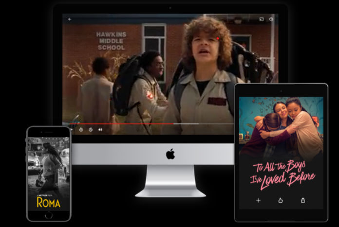

Disfruta en tu TV
Ve en smart TV, PlayStation, Xbox, Chromecast, Apple TV, reproductores de Blu-ray y más.


Disfruta donde quieras
Películas y series ilimitadas en tu teléfono, tablet, computadora y TV.
Crea perfiles para niños
Los niños vivirán aventuras con sus personajes favoritos en un espacio diseñado exclusivamente para ellos, sin costo con tu membresía.


Descarga tus series para verlas offline
Ve Netflix en un avión, un tren o un submarino...